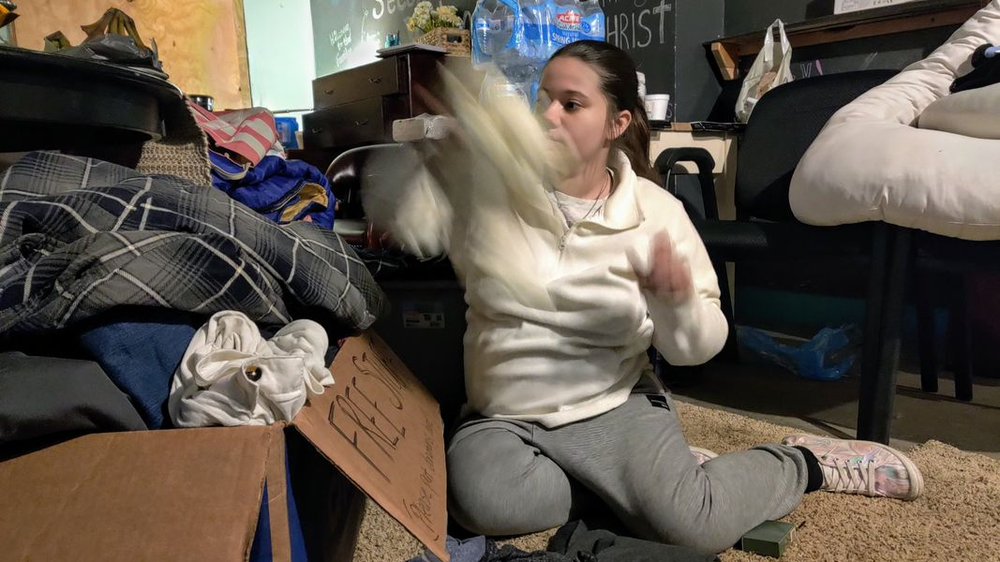

Timeline photos
I'm going to be talking about my run for mayor of Akron more consistently soon. There is going to be one theme: TOGETHER WE CAN DO ANYTHING.
Take Aubrey, pictured here.
She is seen here going through a room full of clothes and supplies that YOU brought to her. She is pregnant and due in April.
I'm talking about a ROOM full of clothes and supplies. Over and over again you humble me with your kindness and generosity. You are always my inspiration to keep helping. (This was so needed and helpful because Aubrey couldn't possibly use all these items so she was able to share them with the rest of the people living in our Garden in tents. It was particularly cold and miserable that week. It couldn't have been more wonderful and beautiful.)
I don't want any physical items from you for Aubrey right now. What I want is your prayers, hopes and positive thoughts.
There is a mom and son who are going to drive her and her boyfriend over 12 hours to take her to her birth family in another state. That should happen late this week. (think about that... people Aubrey has just met in the last month are going to driver her 12 HOURS to get her to her family).
I want you to know one thing: Human beings are good. AMAZINGLY GOOD. (it's when we clump up into factions and gangs and religions and political parties that we lose sight of who we truly are as beings.) YOU. ARE. GOOD!
So, let's push some of that goodness into the ether and hope and pray Aubrey and Cole get their soon-to-be-born baby to her family so she will get to keep it and love it and raise it.
Thank you!
Sage